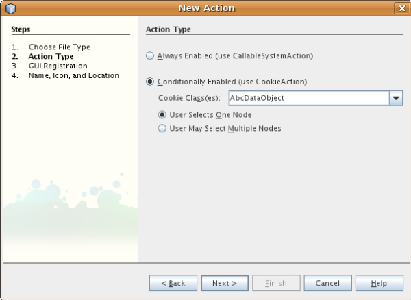

Apache NetBeans
Apache NetBeansLatest release
文件类型集�?教程
| This tutorial needs a review. You can open a JIRA issue, or edit it in GitHub following these contribution guidelines. |
文件类型集�?简介
在 IDE 中�?�识别的文件类型有它们自己的图标�?�?��?�项以�?�行为。所显示的“文件�?是 FileObject ，�?� java.io.File 的包装器；对于�?置文件，则为以�?�?其他方�?存储（例如存储在模�?�的 XML 文件内）的数�?�的包装器。您实际_看到_的是 Node ，它们�?�诸如文件之类的对象�??供�?作和本地化�??称等功能。�?于 Node 和 FileObject 之间的是 DataObject 。 DataObject 与 FileObject 类似，�?�?�之处在于它了解显示的是哪�?类型的文件，并且对于具有�?�?�扩展�??的文件以�?�具有�?�?��??称空间的 XML 文件，通常存在�?�?�类型的 DataObject 。�?个 DataObject 都是由一个�?�?�的模�?��??供的，�?个模�?�支�?一�?或多�?文件类型，例如，通过图�?模�?��?�以识别和打开 .gif 和 .png 文件。
用于识别文件类型的模�?�会安装一个 DataLoader ，这是特定于文件类型的 DataObject 工厂。当展开�?个文件夹时，IDE 会询问�?个已知的 DataLoader 是�?�了解此文件夹的内容。第一个回答“是�?的 DataLoader 将为其中的文件创建 DataObject 。为了实际显示�?个文件的�?些内容，系统会对�?个 DataObject 调用 DataObject.getNodeDelegate() ，而 Node 便是您在 IDE 中实际看到的内容。
下图（居左）显示了上�?��??到的�?一项所�??供的内容：

在本教程中，您将创建一个模�?�，用于为�?�定的 "Abc" 文件（扩展�??为 .abc ）安装 DataLoader 。缺�?情况下，扩展�??为 "abc" 的文件会被视为 IDE 无法识别的任何其他文件；在本教程中，我们将其视为文本文件，因此，IDE 应为 Abc 文件�??供与文本文件相�?�的功能。创建此模�?��?�，我们将�?�您演示如何用仅供 Abc 文件使用的功能�?�增强此模�?�。开�?�周期完�?�?�，您�?�以通过以下方法轻�?�地让其他人使用您的模�?�：在 IDE 中创建一个二进制文件并将此文件�?��?给其他人，�?�者�?�以通过更新中心�?�安装此文件。
创建模�?�项目
在本节中，我们将利用�?�导创建�?个 NetBeans 模�?�所需的�?代�?结构。�?代�?结构包�?��?于特定�?置的�?些文件夹以�?�一组始终需�?的文件。例如，�?个 NetBeans 模�?�都需�?一个 "nbproject" 文件夹和一个 layer.xml 文件，�?者用于存放项目的 meta 数�?�，�?�者用于工具�?按钮和窗�?�等项的声明性注册。
-
选择“文件�?>“新建项目�?(Ctrl-Shift-N)。在“类别�?下选择“NetBeans 模�?��?。在“项目�?下选择“模�?��?，然�?��?�击“下一步�?。
-
在“�??称和�?置�?�?��?�的“项目�??称�?中键入
AbcFileType。将项目�?置更改为计算机上的任�?目录，例如c:\mymodules。将“独立模�?��?�?�选按钮�?留为选中状�?。此�?��?�现在应如下所示：

�?�击“下一步�?。
-
在“基本模�?��?置�?�?��?�中，将“代�?�??称基�?中的
yourorghere替�?�为myorg，以使整个代�?�??称基为org.myorg.abcfiletype。在缺�?模�?�显示�??称中添加空格，以将其更改为Abc File Type。�?留本地化包和 XML 层的�?置，以将其存储在�??为org/myorg/abcfiletype的包中。此�?��?�现在应如下所示：

-
�?�击“完�?�?。
IDE 将创建 Abc File Type 项目。此项目包�?�所有�?代�?和项目 meta 数�?�，例如项目的 Ant 生�?脚本。此项目将会在 IDE 中打开。您�?�以在“项目�?窗�?� (Ctrl-1) 中查看其逻辑结构，在“文件�?窗�?� (Ctrl-2) 中查看其文件结构。例如，“项目�?窗�?�现在应如下所示：

识别 Abc 文件
在本节中，我们将利用�?�导创建区分 Abc 文件和所有其他文件所需的类。在本教程的开头已�??到，�?实现此目的，我们需�?一个数�?�对象�?一个数�?�加载器�?一个 MIME 类型解�?器以�?� layer.xml 文件中的注册�?�目。“新建文件类型�?�?�导将自动为我们创建所有这些内容。
-
�?�键�?�击项目节点，然�?�选择“新建�?>“文件类型�?。
-
在“文件识别�?�?��?�中，执行以下�?作：
-
在“MIME 类型�?编辑框中键入
text/x-abc。 -
在“按文件扩展�??�?编辑框中键入
.abc .ABC。
-
“文件识别�?�?��?�现在应如下所示：

请注�?下�?��??供的有关“文件识别�?�?��?�中的字段的说明：
-
*MIME 类型。*指定数�?�对象的唯一 MIME 类型。
-
按
-
*文件扩展�??。*指定一个或多个文件扩展�??，IDE 将这些扩展�??识别为属于指定的 MIME 类型。�?�以选择在文件扩展�??�?�?�加一个圆点。分隔符为逗�?�和/或空格。因此，所有以下内容都是有效的：
-
.abc,.def -
.abc .def -
abc def -
abc,.def ghi, .wow
我们�?�定 Abc 文件区分大�?写。为此，在本教程中指定了_两�?_ MIME 类型： .abc 和 .ABC 。
-
*XML 根元素。*指定唯一的�??称空间，以将该 XML 文件类型与所有其他 XML 文件类型区分开。由于许多 XML 文件具有相�?�的扩展�?? (
xml)，因此 IDE 通过 XML 根元素�?�区分�?�个 XML 文件。更确切地说，就是 IDE �?�以区分�??称空间以�?� XML 文件中的第一个 XML 元素。例如，您�?�以利用这一点�?�区分 JBoss 部署�??述符和 WebLogic 部署�??述符。区分开这两�?部署�??述符�?�，便�?�以确�?添加到 JBoss 部署�??述符上下文�?��?�中的�?��?�项对于 WebLogic 部署�??述符�?�?�用。有关示例，请�?��? NetBeans Component Palette Module Tutorial（NetBeans 组件�?��?�模�?�教程）。
�?�击“下一步�?。
-
在“�??称和�?置�?�?��?�的“类�??�?缀�?中键入
Abc，然�?��?览到任�? 16x16 �?素的图�?文件作为新文件类型的图标，如下所示。

注�?：�?�以使用任�?图标。如果愿�?，�?�以�?�击以下图标并将其�?存在本地，然�?�在上�?�的�?�导步骤中指定该图标： image::images/Datasource.gif[]
-
�?�击“完�?�?。
“项目�?窗�?�现在应如下所示：

下�?�简�?介�?了�?个新生�?的文件：
-
*AbcDataLoader.java。*识别
text/x-abcMIME 类型。充当AbcDataObject.java的工厂。有关详细信�?�，请�?��? What is a DataLoader?（什么是 DataLoader？）。 -
*AbcResolver.xml。*将
.abc和.ABC扩展�??映射到 MIME 类型。AbcDataLoader仅识别 MIME 类型，而�?了解有关文件扩展�??的信�?�。 -
*AbcDataObject.java。*包装
FileObject。DataObject 是由 DataLoader 生�?的。有关详细信�?�，请�?��? What is a DataObject?（什么是 DataObject？）。 -
AbcDataNode.java。�??供在 IDE 中所_显示_的内容，例如�?作�?图标和本地化�??称等功能。
-
*AbcDataLoaderBeanInfo.java。*控制加载器在“选项�?窗�?�的“对象类型�?部分中显示的外观。
为 Abc 文件创建功能
现在 NetBeans 平�?�能够将 Abc 文件与所有其他类型的文件区分开，接下�?�应添加特定于该文件类型的功能。在本节中，我们将在从资�?管�?�器窗�?�（例如，“项目�?窗�?�）�?�键�?�击该文件节点所显示的上下文�?��?�中添加一个�?��?�项，并使该文件能够在一个窗�?�中打开，而�?是在编辑器中打开。
添加�?作
在本�?节中，我们将使用“新建�?作�?�?�导创建一个 Java 类，用于为我们的文件类型执行�?作。此�?�导还将在 layer.xml 文件中注册该类，以使用户能够在从资�?管�?�器窗�?��?�键�?�击该文件类型节点所显示的上下文�?��?�中调用此�?作。
-
�?�键�?�击项目节点，然�?�选择“新建�?>“�?作�?。
-
在“�?作类型�?�?��?�中，�?�击“有�?�件地�?�用�?。键入
AbcDataObject，这是之�?由“新建文件类型�?�?�导生�?的数�?�对象的�??称，如下所示：

�?�击“下一步�?。
-
在“GUI 注册�?�?��?�中，从“类别�?下拉列表中选择“编辑�?类别。“类别�?下拉列表用于控制�?作在 IDE 的快�?�键编辑器中的显示�?置。
接下�?�，�?�消选中“全局�?��?�项�?，然�?�选中“文件类型上下文�?��?�项�?。在“内容类型�?下拉列表中，选择您之�?在“新建文件类型�?�?�导中指定的 MIME 类型，如下所示：

请注�?，您�?�以设置�?��?�项的�?置，并将此�?��?�项与其�?�?�和�?��?�的�?��?�项隔开。�?�击“下一步�?。
-
在“�??称和�?置�?�?��?�的“类�??�?中键入
MyAction，在“显示�??称�?中键入My Action。上下文�?��?��??供的�?��?�项�?显示图标。因此，请�?�击“完�?�?，此时MyAction.java将被添加到org.myorg.abcfiletype包中。
-
在�?代�?编辑器中，将下�?�的代�?添加到此�?作的
performAction方法中：
protected void performAction(Node[] activatedNodes) {
AbcDataObject d = (AbcDataObject) activatedNodes[0].getCookie(AbcDataObject.class);
FileObject f = d.getPrimaryFile();
String displayName = FileUtil.getFileDisplayName(f);
String msg = "I am " + displayName + ". Hear me roar!";
NotifyDescriptor nd = new NotifyDescriptor.Message(msg);
DialogDisplayer.getDefault().notify(nd);
}按 Ctrl-Shift-I 组�?�键。IDE 会自动将 import 语�?�添加到该类的顶部。�?些代�?�?带有红色下划线，这表示类路径中并未包括所有需�?的包。�?�键�?�击项目节点，选择“属性�?，然�?��?�击“项目属性�?对�?框中的“库�?。�?�击“库�?窗格顶部的“添加�?�?�添加“对�?框 API�?。
在 MyAction.java 类中�?次按 Ctrl-Shift-I 组�?�键。红色下划线将会消失，因为 IDE 在对�?框 API 中找到了所需的包。
-
在“�?�?文件�?节点中，展开“XML 层�?。"<此层>" 和 "<上下文中的此层>" 这两个节点以�?�它们的�?节点共�?�组�?了 系统 Filesystem �?览器。展开 "<此层>"，�?展开 "Loaders"，继续展开节点，直到显示您之�?所创建的�?作。
-
将
My Action拖放到“打开�?�?作下方，如下所示：

从最�?�两步�?�以看出，系统 Filesystem �?览器�?�用于快速�?组在系统 Filesystem 中注册的�?�项的顺�?。
在窗�?�中打开文件
缺�?情况下，当用户打开在本教程中定义的类型的文件时，该文件将在基本编辑器中打开。但是，有时您�?�能需�?创建文件的�?�视表示，以使用户能够将�?部件拖放到该�?�视表示上。创建此类用户界�?�的第一步是，使用户�?�以在窗�?�中打开文件。本�?节将�?�您演示如何执行此�?作。
-
使用“窗�?�组件�?�?�导创建一个�??为 AbcTopComponent 的 TopComponent。
-
将数�?�对象更改为使用 OpenSupport 而�?是 DataEditorSupport。
public AbcDataObject(FileObject pf, AbcDataLoader loader)
throws DataObjectExistsException, IOException {
super(pf, loader);
CookieSet cookies = getCookieSet();
//cookies.add((Node.Cookie) DataEditorSupport.create(this, getPrimaryEntry(), cookies));
cookies.add((Node.Cookie) new AbcOpenSupport(getPrimaryEntry()));
}-
创建 OpenSupport 类：
class AbcOpenSupport extends OpenSupport implements OpenCookie, CloseCookie {
public AbcOpenSupport(AbcDataObject.Entry entry) {
super(entry);
}
protected CloneableTopComponent createCloneableTopComponent() {
AbcDataObject dobj = (AbcDataObject) entry.getDataObject();
AbcTopComponent tc = new AbcTopComponent();
tc.setDisplayName(dobj.getName());
return tc;
}
}-
调整 TopComponent 以扩展 CloneableTopComponent，而�?是 TopComponent。将 TopComponent 的类修饰符�?�其构造函数的修饰符设置为 public 而�?是 private。
现在，当打开 Abc 文件时，OpenSupport 类便会处�?�此打开�?作，以便在 TopComponent 中打开该文件，而�?是在 DataEditorSupport 所�??供的基本编辑器中打开。 NetBeans �?�视库 6.0 教程�??供了一个示例，用于说明�?�以执行哪些�?作�?�进一步开�?� TopComponent。
安装 Abc 文件类型模�?�
IDE 使用 Ant 生�?脚本�?�生�?和安装模�?�。此生�?脚本是在创建项目时创建的。
安装 NetBeans 模�?�
-
在“项目�?窗�?�中，�?�键�?�击 "Abc File Type" 项目，然�?�选择“在目标平�?�中安装/�?新装入�?。
将生�?此模�?�并将其安装在目标 IDE 中。此时将打开目标 IDE，您�?�以在其中试用新模�?�。缺�?目标 IDE 是 IDE 的当�?实例所使用的安装。
使用 NetBeans 模�?�
-
在 IDE 中创建任何类型的应用程�?。
-
�?�键�?�击该应用程�?节点，然�?�选择“新建�?>“其他�?。在“其他�?类别中，有一个用于创建新文件类型的虚拟模�?�：

如果�?通过该虚拟模�?��??供缺�?代�?，请将这些代�?添加到“新建文件类型�?�?�导所创建的 AbcTemplate.abc 文件中。
-
�?�键�?�击此文件的节点。
请注�?，Abc 文件具有您在其模�?�中所指定的图标，并且�?�以从�?�键�?�击�?作所显示的上下文�?��?�中使用在其 layer.xml 文件中定义的一系列�?作：

-
选择新�?��?�项，将显示 Abc 文件的�??称和�?置：

创建�?�共享的模�?�二进制文件
-
在“项目�?窗�?�中，�?�键�?�击 "Abc File Type" 项目，然�?�选择“创建 NBM�?。
将创建 NBM 文件，您�?�以在“文件�?窗�?� (Ctrl-2) 中查看它：

-
通过�?��?电�?邮件等方�?将该文件�??供给他人使用。接收者应使用�?�件管�?�器（“工具�?>“�?�件�?）�?�安装它。 请将您的�?�?和建议�?��?给我们
�?�续步骤
有关创建和开�?� NetBeans 模�?�的详细信�?�，请�?��?以下资�?：
版本控制
| 版本 | 日期 | 更改 |
|---|---|---|
1 |
2005 年 8 月 25 日 |
* �?始版本。 * 待更改项： * 添加创建�?�定制（�?�：“扩展对新文件类型的支�?�?一节）。 * 说明所生�?文件的用途（当�?为�?��?符）。 * 说明层文件的�?�目。 * 说明第一个“文件类型�?�?��?�（当�?为�?��?符）。 * �?�能针对 XML 文件的识别创建�?�独的教程。 |
2 |
2005 年 9 月 23 日 |
* 基于常�?问题解答添加了大�?信�?�，并添加了“�?作�?�?�导和系统 Filesystem �?览器。
* 待更改项：
* 说明 |
3 |
2005 年 9 月 28 日 |
* 整�?�了 Jesse Glick �??供的注释。
* 待更改项：
* 需�?更多有关 MIME 类型的信�?�。
* 介�?性的段�?�应该用图�?�说明。用图�?�演示 Node�?DataObject�?FileObject�?DataLoader 等�?�项之间的关系。
* 将添加许多 Javadoc 链接（对于 |
4 |
2005 年 10 月 4 日 |
* 在介�?性段�?�中添加了两个图（�?�自 Tim Boudreau 的 JavaOne 演示文稿）。
* 待更改项：
* 需�?更多有关 MIME 类型的信�?�。
* 将添加许多 Javadoc 链接（对于 |
4 |
2005 年 11 月 4 日 |
* 在结尾添加了�?�下载的�?代�?�?新的“安装样例�?一节以�?�“语法�?出显示�?教程的链接。 * 待更改项： * �?然需�?完�?在 10 月 4 日�??到的�?�项。 |
5 |
2005 年 11 月 29 日 |
* 添加了全新的“组件�?��?��?教程的链接。 * 待更改项： * �?然需�?完�?在 10 月 4 日�??到的�?�项。 |
6 |
2006 年 4 月 21 日 |
* 将标题由“DataLoader 模�?�教程�?更改为“识别文件类型教程�?。 * 待更改项： * �?然需�?完�?在 10 月 4 日�??到的�?�项。 |
7 |
2007 年 11 月 17 日 |
* 将整个教程更新到 6.0，替�?�了所有�?幕快照，现在 [由于 6.0 IDE 已�??供对清�?�文件的支�?]，此教程主�?介�?�?�定的 Abc 文件。 * 待更改项： * 需�?替�?�与以�?相�?�的下载地�?�，并处�?�清�?�文件。 * �?然需�?完�?在 10 月 4 日�??到的�?�项。 * 在 TopComponent 中添加了 OpenSupport，并引用了�?�视库。 * 将标题更改为“文件类型集�?教程�?。 * 针对 6.0 调整了教程中的几处内容。 |
8 |
2008 年 4 月 15 日 |
将样�?（标记�?目录�?所需软件表）更新为新格�?。 |